Table of Contents
Stell’ dir vor, du wohnst in einer Stadt, in der es seit 100 Jahren keine Bäckerei gibt. Vor ein paar Jahren hat jemand sehr findiges diese Lücke geschlossen. Im Angebot: Die leckersten Brötchen der Welt. Die Brötchen sind extrem erfolgreich und so expandiert dieser Bäcker massiv - bald gibt es in fast jeder Straße eine Filiale.
Das ganze Boulangerie-Spektakel hat nur einen Haken: Die Brötchen sind nicht nur ungemein köstlich, sondern auch extrem günstig. Zu günstig: Der Bäcker macht Verlust. Denn er muss ja die Ladenmiete, Öfen und das Mehl bezahlen.
Und ein anderes Problem gesellt sich dazu: Auch andere Bäcker haben Lunte gerochen und eröffnen Filialen im ganz großen Stil. Es gibt nun in jeder Straße mindestens fünf Bäckereien. Aus Gewohnheit gehen die meisten KundInnen noch zu unserem Bäcker-Pionier, aber andere Brötchen sind auch lecker und machen genauso satt. Also läuft das Geschäft bei den anderen Bäckern auch ganz gut.
Doch es gibt auch gute Nachrichten! Alle Immobilien, in denen der Bäcker seine Filialen betreibt, gehören ein und demselben Vermieter. Und der denkt sich: “Komm, deine Brötchen sind ganz ok. Ich leihe dir 10 Mio. Euro. Aber dafür darfst du nur meine Flächen mieten.”. Und der Hersteller der Backöfen denkt sich auch: “Hier hast du noch mal 10 Mio. Euro. Aber du musst dafür meine Öfen kaufen!” Und der Mehl-Lieferant… naja, ihr könnt euch denken, was der macht. Und außerdem verspricht unser Bäcker, dass er große Ideen für die Zukunft hat: Er will aus dem Mehl nicht nur Brötchen formen, sondern auch Torten, Croissants und Basiers anbieten - nur aus dem Mehl! Er hätte da ein paar Tricks auf Lager, an denen die Pattisserie-Ingenieure noch herumtüfteln. Außerdem werden die Brötchen nach und nach verbessert, mal etwas Puderzucker, mal mit Marmelade gefüllt oder mit einer Prise Zimt bestreut.
Und das läuft jetzt schon seit einigen Jahren so. Der Bäcker macht irgendwie immer noch Verlust und die Konkurrenz wächst weiter und die Leute fangen an, zu Hause Brötchen zu backen.

Na, kommt dir die Geschichte bekannt vor?
Amazon, Nvidia und SoftBank haben es wieder getan und noch mal 122 Mrd. Dollar für OpenAI locker gemacht haben [1]. Die Bewertung von OpenAI steigt damit auf über 850 Mrd. Dollar an [1][2]. Klingt ein bisschen nach Sunken Cost Fallacy…
Ich hatte das ja schon mal ausführlich beschrieben, an dem aktuellen Beispiel noch mal in aller Kürze:
-
Amazon subventioniert sich damit im Prinzip nur selber, weil OpenAI das Geld mehr oder weniger direkt in AWS-Rechenkapazität steckt [1].
-
Nvidia profitiert indirekt, weil die ganzen Hyperscaler meist auf Nvidia-Hardware zurückgreifen. Das Geld, das man OpenAI zuschiebt, landet über die Hyperscaler wie Oracle, Microsoft oder Amazon am Ende wieder beim GPU-Lieferanten: Nvidia [1][3].
-
SoftBank gehört zu einem Großteil ARM. Und ARM ist so etwas wie eine der Basis-Technologien. ARM sitzt also am Anfang der Wertschöpfungskette und profitiert davon, wenn OpenAI Rechenkapazität kauft - fast egal wo[1]. Also wird auch hier von einer Tasche in die andere investiert.
Und OpenAI? Hat zwar 900 Mio. wöchentliche NutzerInnen [4], aber kein Geschäftsmodell, das durch einen genialen Unique Selling Point auffällt. Google hat nahezu das gleiche KI.-Produkt im Angebot, ist aber ingesamt viel weiter verbreitet und ziemlich gut in ein etabliertes Ökosystem integriert [4]. Anthropic kann Coding viel besser und hat nach der Pentagon-Geschichte auch noch Sympathiepunkte gesammelt [2]. In der EU nimmt die „Digitale Souveränität“-Bewegung immer mehr Fahrt auf. Open-Source-Modelle, die mit kleiner Hardware, aber akzeptabler Leistung lokal laufen, tauchen langsam am Horizont auf [2]. Es gibt keinen Loyalitäts-Bonus. Wenn mich die Werbung von ChatGPT nervt oder das kostenlose Pro-Kontingent aufgebraucht ist, wechsel’ ich zu Gemini et al. Es gibt auch keinen Lock-in-Effekt – ich kann einfach vier andere Chat-Agenten fragen, ohne spürbare Qualitäts- oder Komforteinbußen. Das Experiment, dass der KI-Agent für dich einkaufen geht, ging auch nach hinten los. SORA musste kürzlich eingestellt werden [5] und soll nun im Projekt ATLAS wieder aufleben [4]. Aber ATLAS gewinnt auch nicht gerade Vertrauenspreise bei den NutzerInnen [6][7].
OpenAI macht angeblich jeden Tag um die 40 Mio. Euro Verlust [2]. Kommt da in den nächsten Monaten der große Banger, der uns alle vom Hocker haut? AGI? Dafür ist die Architektur der LLMs angeblich gar nicht geeignet [8][9]. Was hecken die ForscherInnen also im Keller von OpenAI aus? Intern wird am Projekt „Frontier“ gearbeitet – einer Agenten-Plattform, die sich tief in Unternehmensabläufe fressen soll [10] - aber woher soll das Vertrauen für die “Integration stochastischer Methoden mit der Brechstange in sensible Firmenprozesse” kommen?
Wo bleibt der iPhone-Moment?
Wo bleibt der iPhone-Moment von OpenAI, der alle Zweifel wegbläst?
Die einzige Wette, die hier eingegangen wird, ist die Skalierungs-Wette. Es gilt: Je mehr Rechenpower, desto erfolgreicher die Aussichten [11]. Nur: SaaS, wie wir es bisher kannten, skaliert anders, nämlich eher unterproportional. KI skaliert linear (wenn nicht sogar überproportional). Die Inferenz ist nicht unbedingt billiger, nur weil ich sie zehnmal ausführe.
Versteht mich nicht falsch - ich will nicht alles schwarz malen: Mit AGI würde vielleicht ein “goldenes Zeitalter” eingeläutet werden. Die KI-Singularität steht vielleicht sogar kurz bevor. Also, in den nächsten zehn bis zwanzig Jahren. Angeblich haben wir - konservativ betrachtet - 97 % erreicht [12]. Aber wo fängt die Skala an? Beim Feuer? Der Industrialisierung? Dem LLM-Hype von 2023? Was ich damit sagen will: Bisher sorgt KI vor allem für eine Menge Slop. Und dessen werden wir ziemlich schnell überdrüssig. Nur slightly related, dass wir eben doch nicht jeden Mist fressen: Die Sucht-Mechanismen haben wir vor 10 Jahren noch gefeiert. Die Timeline spielt genau das aus, was ich sehen will. Herrlich! Nur: Im 2026 wird man dafür schon mal vor den Kadi gezerrt… [13]
Und natürlich die Beiträge auf LinkedIn et al, in denen ein paar Hype-ApologethInnen Selfies von sich posten und erklären, wie sie dank KI in 42 Tagen dröflzig Apps hochgezogen haben. Wenn du wissen willst wie, folge ihnen und kommentiere mit deiner E-Mail-Adresse!
Also ganz unironisch, wirklich jetzt: KI verbessert Produktivität massiv. Wenn man weiß wie und in gewissen Rahmen.
Wusstest du’s? Schnittstellen - also API - oder moderne Software könnten Unternehmensprozesse auch massiv optimieren. Und die gibt es schon seit wann.. 1993? Nur: Es gibt Studien, die zeigen, dass 50 - 60% der Unternehmen weltweit veraltete und propietärer Software [14] nutzen.
Der Punkt, den ich machen will, ohne überskeptisch sein zu wollen: Nur weil KI das Potential hat, unsere aller Produktivität zu steigern, steigert sich unsere aller Produktivität nicht aufgrund der bloßen Anwesenheit von KI. [15]
Fact Check
Ich habe den ersten Teil des Artikels einmal von ChatGPT gegenlesen lassen, um die Fakten zu checken. Und das Ergebnis ist zu köstlich, um es euch vorzuenthalten. Die Zusammenfassung steigt folgendermaßen ein:
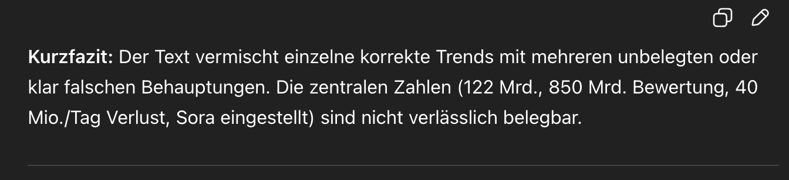
Kurzfazit: Der Text vermischt einzelne korrekte Trends mit mehreren unbelegten oder klar falschen Behauptungen. Die zentralen Zahlen (122 Mrd., 850 Mrd. Bewertung, 40 Mio./Tag Verlust, Sora eingestellt) sind nicht verlässlich belegbar.
Uff. Harte Vorwürfe, ChatGPT. Aber was ist dran?
Ach guck - das kommt ja von OpenAI selber? [16]
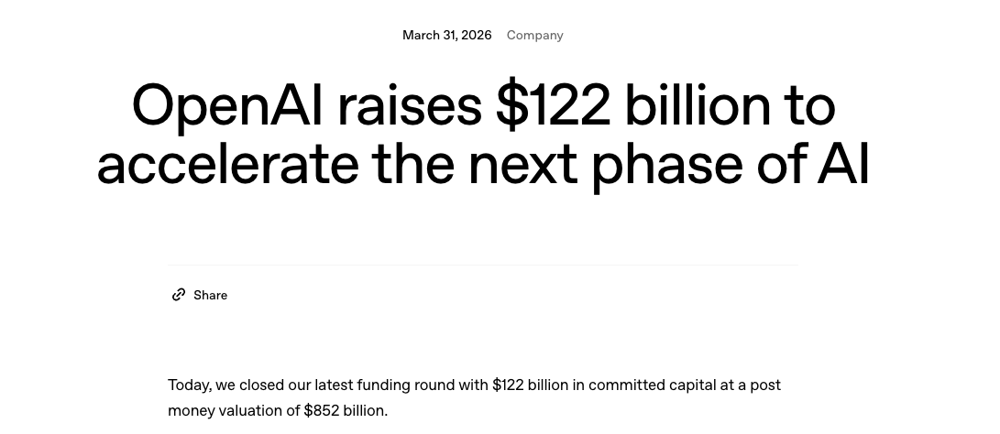
Es geht fröhlich weiter:
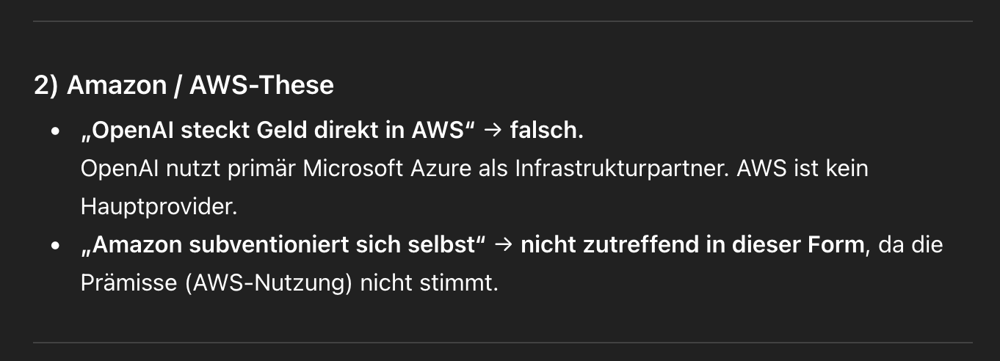
„OpenAI steckt Geld direkt in AWS“ → falsch.
OpenAI nutzt primär Microsoft Azure als Infrastrukturpartner. AWS ist kein Hauptprovider. „Amazon subventioniert sich selbst“ → nicht zutreffend in dieser Form, da die Prämisse (AWS-Nutzung) nicht stimmt.
Nein, kein Hauptprovider, aber vielleicht signifkanter Partner. Sagt jedenfalls der andere Teil der Partnerschaft - nämlich Amazon [17]:
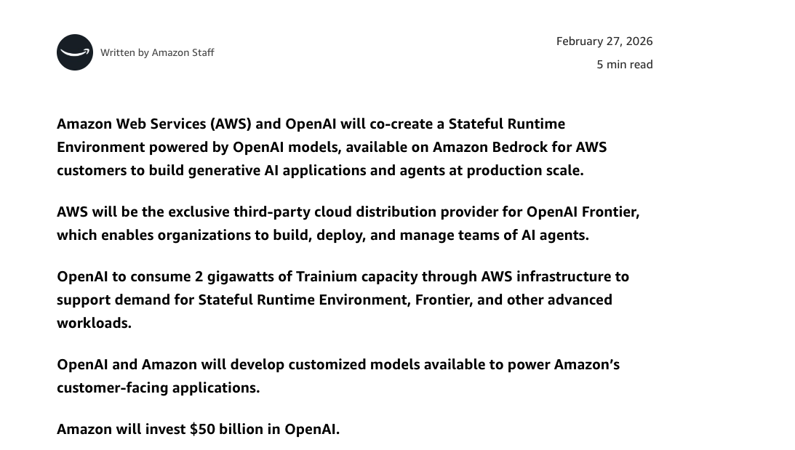
Was stört dich denn noch?
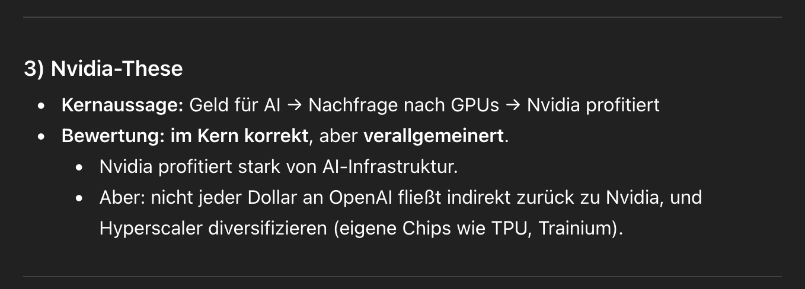
Kernaussage: Geld für AI → Nachfrage nach GPUs → Nvidia profitiert Bewertung: im Kern korrekt, aber verallgemeinert. Nvidia profitiert stark von AI-Infrastruktur. Aber: nicht jeder Dollar an OpenAI fließt indirekt zurück zu Nvidia, und Hyperscaler diversifizieren (eigene Chips wie TPU, Trainium).
Ja gut - so würde ich auch argumentieren, wenn ich nicht wollte, dass der Kreislauf auffliegt…
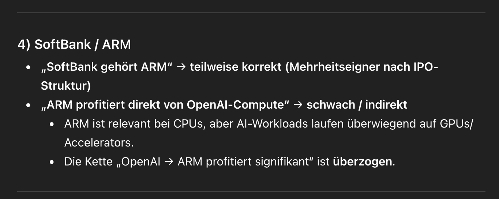
„SoftBank gehört ARM“ → teilweise korrekt (Mehrheitseigner nach IPO-Struktur) „ARM profitiert direkt von OpenAI-Compute“ → schwach / indirekt ARM ist relevant bei CPUs, aber AI-Workloads laufen überwiegend auf GPUs/Accelerators. Die Kette „OpenAI → ARM profitiert signifikant“ ist überzogen.
Ja gut, ARM-Architektur steckt vielleicht nicht in der RTX5070 - ist aber dennoch ein bedeutender Bauteil. Wie z.B. in der Nvidia GH200 (Grace Hopper) oder der neuen GB200 (Blackwell). Beide basieren auf ARM-Teczhnologie [18], [19]. ARM ist für seine effiziente und leistungsstarke Architektur bekannt. Auch Apples extrem erfolgreiche Silicon-Serie basiert auf ARM-Prozessoren. Es muss nicht GPU heißen, nur um für Inferenz geeignet zu sein.
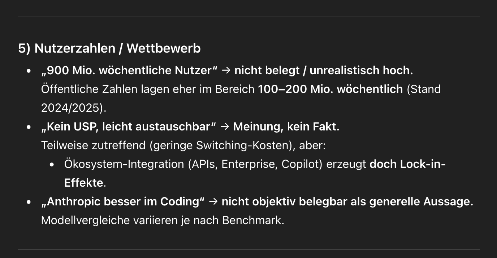
- „900 Mio. wöchentliche Nutzer“ → nicht belegt / unrealistisch hoch.
Öffentliche Zahlen lagen eher im Bereich 100–200 Mio. wöchentlich (Stand 2024/2025).- „Kein USP, leicht austauschbar“ → Meinung, kein Fakt.
Teilweise zutreffend (geringe Switching-Kosten), aber:- Ökosystem-Integration (APIs, Enterprise, Copilot) erzeugt doch Lock-in-Effekte.
- „Anthropic besser im Coding“ → nicht objektiv belegbar als generelle Aussage.
Modellvergleiche variieren je nach Benchmark.****
Naja.. auchg das behauptet zumidnest OpenAI selber [20]:
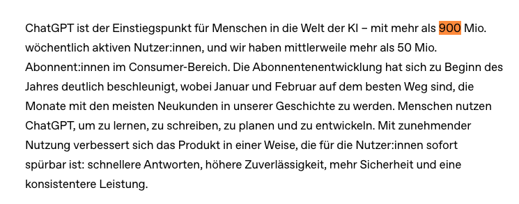
Und dass Anthropic besser abschneidet ist zumindest durch Benchmarks bestätigt [21] - hört ChatGPT natürlich nicht gerne. Aber das ist im Detail auch gar nicht der Punkt. Selbst wenn Codex so gut wäre: Es gibt mittlerweile zahlreiche Alternativen. Und das “Problem” aus Sicht der Anbieter ist vor allem, dass ich innerhalb von zwei Sekunden einfach einen anderen Coding-Agenten auf meine Code-Base lassen kann - ohne signfikante Qualitäts- oder Komforteinbußen - vielleicht eher sogar dem Gegenteil!
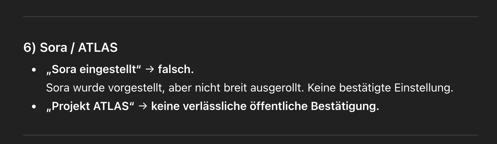
„Sora eingestellt“ → falsch.
Sora wurde vorgestellt, aber nicht breit ausgerollt. Keine bestätigte Einstellung. „Projekt ATLAS“ → keine verlässliche öffentliche Bestätigung.
Auch hier, liegt ChatGPT falsch - aber nun müssen wir mal fair bleiben - vielleicht hätte ich der KI sagen müssen, dass es im Internet nach aktuellen Fakten suchen soll. [22], [23].
„40 Mio. € Verlust pro Tag“** → nicht belegt.
Das ist zwar nicht öffentlich bestätigt, aber man kann angeblich davon ausgehen, dass OpenAI im Moment eher defizitär unterwegs ist. Mal sogar mehr, mal weniger - wie weit man den Gerüchjtenglauben kann. sei natürliuch einmal dahin gestellt. Den Punkt lass ich gelten.
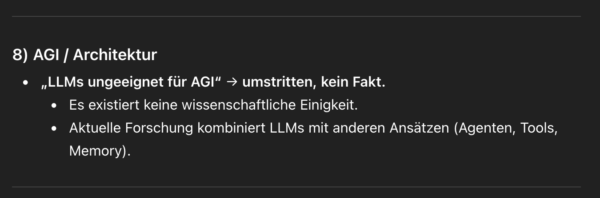
8) AGI / Architektur
- „LLMs ungeeignet für AGI“ → umstritten, kein Fakt.
- Es existiert keine wissenschaftliche Einigkeit.
- Aktuelle Forschung kombiniert LLMs mit anderen Ansätzen (Agenten, Tools, Memory).
OK: Point made. Das ist vielleicht auch eher eine Paradigmen-Frage. Zumindest sind sich die Experten uneinig [24], [25]. Vielleicht schafft OpenAI es ja doch, AGI mit dem einem getunten Transformer-Ansatz zu erreichen. Aber hier kommt der Interessenkonflikt: Wenn ich Geld von Investoren will, behaupte ich natürlich felsenfest genau das.
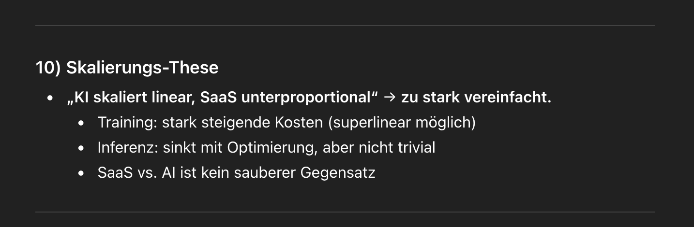
10) Skalierungs-These
- „KI skaliert linear, SaaS unterproportional“ → zu stark vereinfacht.
- Training: stark steigende Kosten (superlinear möglich)
- Inferenz: sinkt mit Optimierung, aber nicht trivial
- SaaS vs. AI ist kein sauberer Gegensatz
Ja - schon verstanden, der vergleich hinkt. Aber der ökonomische Hinweis ist nicht zu verachten: Wenn ich eine App auf den Markt bringen, ist es fast egal, ob ich 1.000 oder 10.000 Kunden bediene - die Kosten steigen eher vernachlässigbar. OpenAI kann noch mal 100 Mio. Kunden anlocken und würde trotzdem nicht von Skaleneffekten profitieren. Jedenfalls nicht in dem Maße, wie wir es von anderen Bereichen gewohnt sind. Das nennt man Grenzkosten.
9) „Frontier“-Projekt
- keine verlässliche öffentliche Quelle → Spekulation.
Ok - noch mal: ChatGPT holt seine Daten “aus dem Archiv” und die Meldung hierzu ist gerade 2 Monate alt [26] - aber ein bisschen unangenehm ist das ja schon, oder? Denn gleichzeitig gibt es das Gerücht schon weitaus länger. [27]
Fazit
Jetzt habe ich ChatGPT schon ziemlich vorgeführt - das ist ein bisschen unfair. Aber einerseits ist ChatGPT in der Antwort auch so beharrlich nicht selbstkritisch und andererseits will ich auch mal zeigen, wie schwer die KI es auch Anfang 2026 noch mit den harten Fakten hat. Ich will nicht immer pöbeln, ich bin auch kein ausgesprochener Gegner von KI oder ChatGPT im Speziellen. Ich bin mit meiner Kritik an den Investitions-Strategien aber auch nicht alleine. Vielleicht täusche ich mich - und ich hoffe ich täusche mich und vielleicht kommt diesen Sommer der große Knaller und alles wird gut. Dann automatisieren wir alle IT-Aufgabem, führen das Bedingungslose Grundeinkommen ein und ich kann als unbegabter Tischler mit zwei linken Händen etwas machen, bei dem ich keinen krummen Rücken bekomme…
Quellen yeah baby yeah
[1] MLQ.ai (01.04.2026): OpenAI Raises $122 Billion Funding Round at a $852 billion Post-Money Valuation [2] Windows Central (20.01.2026): OpenAI might torch $14 billion in 2026, hitting bankruptcy by next year [3] Computerwoche (2026): Oracle gibt 40 Milliarden Dollar für Nvidia-Chips aus [4] TechRadar (02.04.2026): OpenAI doesn’t just want to answer your questions — it wants to run your digital life [5] The Decoder (2026): OpenAI sets two-stage Sora shutdown with app closing April 2026 [6] University of Sydney (30.10.2025): OpenAI Atlas browser comes with safety risks [7] eSecurity Planet (2026): LayerX Exposes Critical Flaw in OpenAI’s ChatGPT Atlas Browser [8] Unaligned Newsletter (17.02.2026): The Limits of LLMs on the Road to AGI [9] Yann LeCun via YouTube (27.01.2026): Why LLMs Will Not Lead to AGI [10] The Decoder (21.03.2026): OpenAI plans to nearly double its workforce by 2026 as it ramps up enterprise push via Frontier [11] Reddit r/accelerate (21.10.2025): OpenAI’s Aleksander Mądry: “By the end of 2026, we’ll be living in a world where AGI exists” [12] Alan’s conservative countdown to AGI: https://lifearchitect.ai/agi/ [13] Meta und Google für Suchtgefahr haftbar https://www.tagesschau.de/ausland/amerika/suchtpotenzial-social-media-prozess-100.html [14] McKinsey / Adalo (27.02.2026): 40 Legacy Software Migration Trends for Enterprises in 2026 [15] TRANSFORM / Bitkom (02.05.2025): Zwischen Anspruch und Wirklichkeit: Digitalisierung bleibt für viele Unternehmen eine Herausforderung [16] OpenAI (2026): OpenAI raises $122 billion to accelerate the next phase of A [17] Amazon (2026): OpenAI and Amazon announce strategic partnership [18] Nvidia (2026): Grace Hopper Superchip [19] Nvidia (2026): GB200 (Blackwell) [20] OpenAI (2026): KI für alle zugänglich machen [21] MorphL (March 2026): Best AI for Coding: Quick Answer [22] TechRadar (02.04.2026): OpenAI doesn’t just want to answer your questions — it wants to run your digital life [23] The Decoder (2026): OpenAI sets two-stage Sora shutdown with app closing April 2026 and API following in September [24] Yann LeCun via YouTube (27.01.2026): Why Scaling LLMs Will Not Lead to Human-Level AI [25] SBS Swiss Business School (12.01.2026): Artificial Intelligence After Scaling: The Philosophical Divide [26] OpenAI (2026): Einführung von OpenAI Frontier [27] Vantage (2026): Vantage breaks ground on Texas gigawatt data center campus for OpenAI
Zusammenfassung
In diesem Artikel wird die aktuelle Situation von OpenAI und der KI-Industrie anhand einer Bäcker-Allegorie analysiert. Es wird diskutiert, wie Investitionen von Unternehmen wie Amazon, Nvidia und SoftBank in OpenAI zu einem Kreislauf führen, der trotz hoher Verluste aufrechterhalten wird. Es werden auch die Herausforderungen und Unsicherheiten im Zusammenhang mit der Entwicklung von AGI und der Skalierung von KI-Produkten beleuchtet.
Hauptthemen: Künstliche Intelligenz OpenAI Investitionen AGI Skalierung Technologie Unternehmen Zukunft
Schwierigkeitsgrad: fortgeschritten
Lesezeit: ca. 10 Minuten